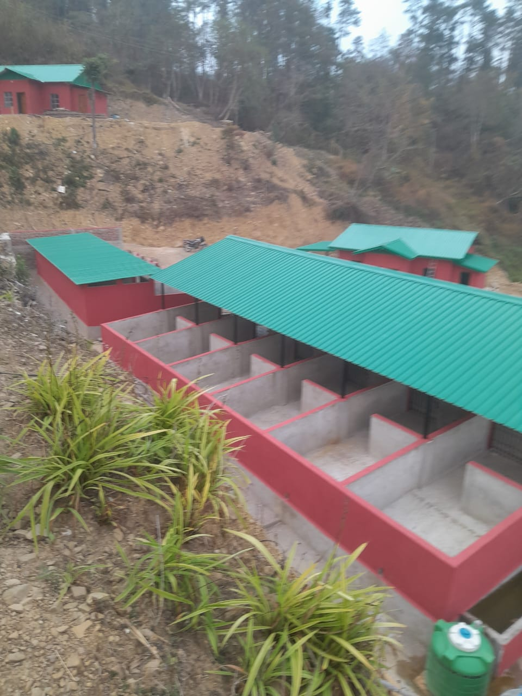
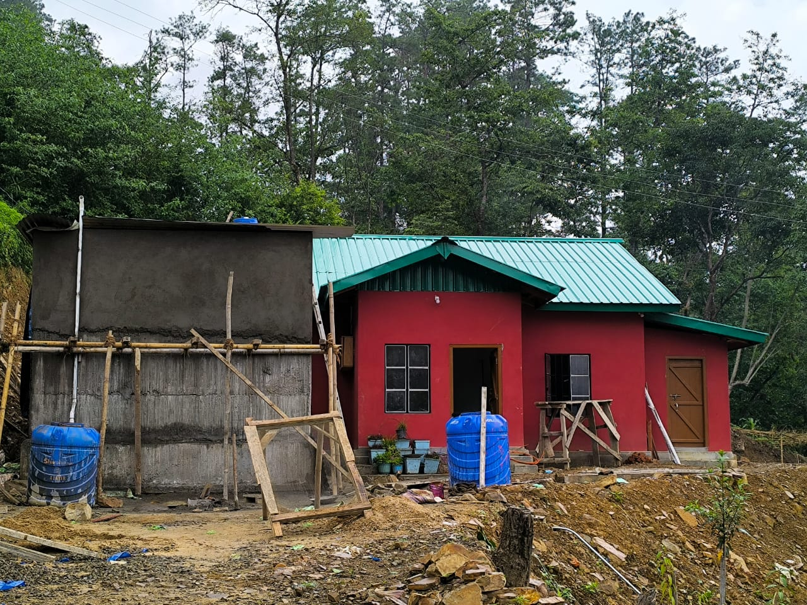
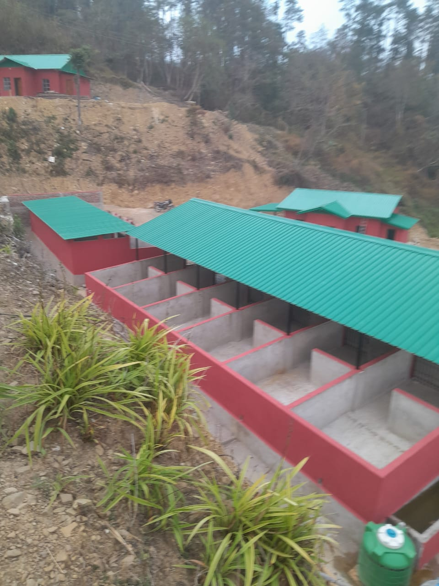
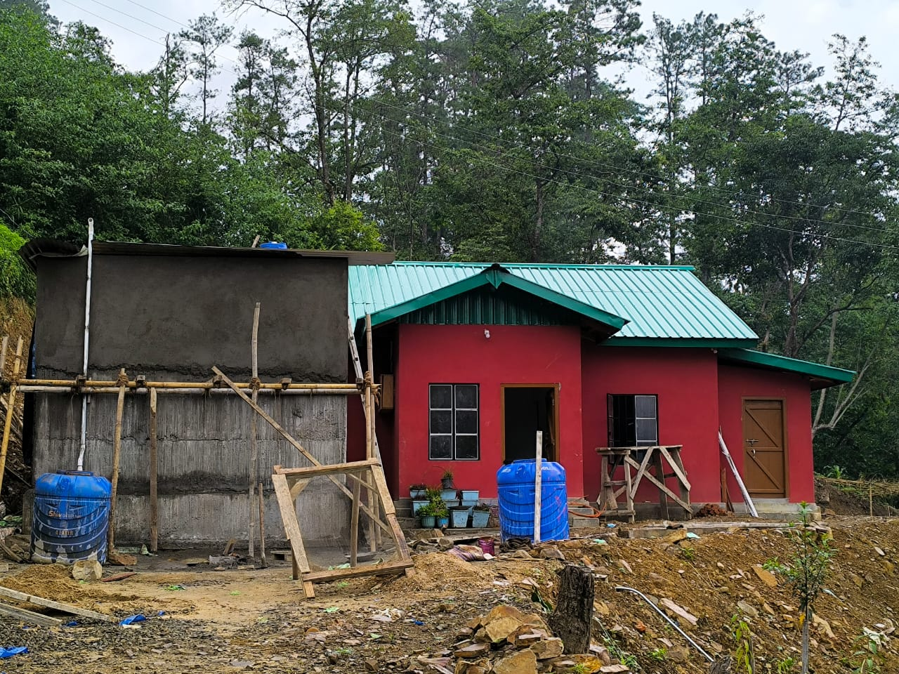
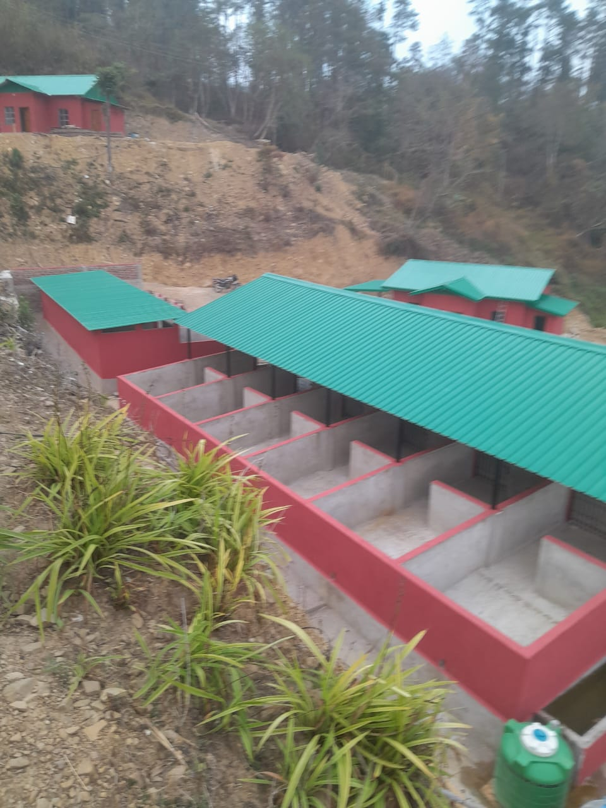
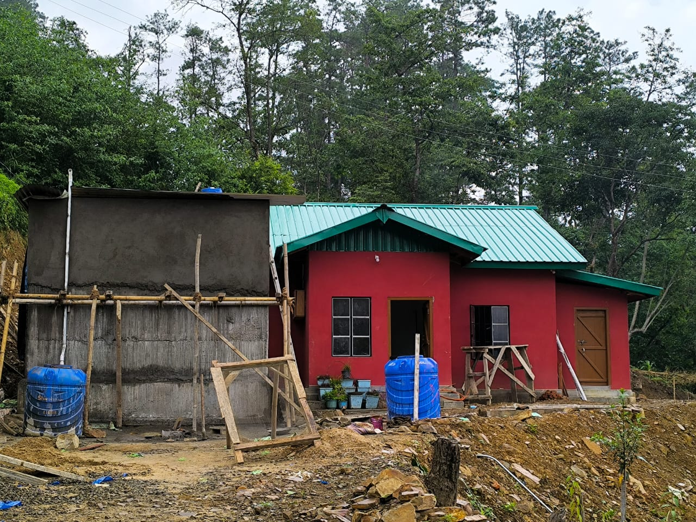

Farm Gallery
Check out some pictures from our farm environment.
 



-Our farm operates with eco-friendly practices, focusing on animal welfare and environmental balance-
Hetame Lu Farm is a family-owned agricultural paradise nestled in the heart of the countryside, dedicated to sustainable farming practices and quality produce. Our farm spans several acres of fertile land, where we nurture a diverse range of crops and livestock with love and care. We believe in working harmoniously with nature to ensure that every product we grow or raise is healthy, fresh, and environmentally friendly. At Hetame Lu Farm, we prioritize eco-friendly methods that protect the soil, conserve water, and promote biodiversity. From organic fertilizers to integrated pest management, our farming techniques reflect a deep commitment to sustainability. This dedication not only benefits the environment but also results in nutrient-rich produce that supports the health and well-being of our customers. Our livestock, including pigs, poultry, and cattle, are raised humanely in spacious, clean, and natural surroundings. We focus on animal welfare and ethical treatment, ensuring that our animals live stress-free lives. This care translates into high-quality meat and dairy products that are safe, flavorful, and wholesome. Community engagement is at the heart of Hetame Lu Farm’s mission. We actively support local markets, collaborate with neighboring farms, and offer educational tours to share our passion for agriculture. By connecting people with the source of their food, we hope to inspire healthier eating habits and greater appreciation for sustainable farming. Looking ahead, Hetame Lu Farm continues to grow and innovate, exploring new crops, technologies, and eco-conscious initiatives. Our vision is to be a leading example of responsible farming that nurtures the land and enriches the lives of everyone we serve. Join us on this journey towards a greener, healthier future.
At Hetame Lu Farm, we specialize in breeding robust and healthy piglets using proven, sustainable practices. Our breeding program focuses on strong genetics, excellent health, and optimal growth rates to ensure that each piglet meets the highest standards. Whether you are a smallholder or a commercial farmer, we provide quality piglets that are ready to thrive in your environment. Our expert team offers advice on piglet care and nutrition to maximize your farm’s success.
We proudly supply premium organic pork raised right here on our farm. Our pigs are nurtured with organic feed and reared in stress-free, natural conditions without antibiotics or growth hormones. This guarantees pork that is not only delicious but also healthier and free from harmful chemicals. We cater to local markets, restaurants, and consumers who value quality, sustainability, and ethical farming. Taste the difference of truly organic pork from Hetame Lu Farm.
Experience farm life firsthand with our guided tours and educational visits. Designed for students, families, and agricultural enthusiasts, our tours provide a unique opportunity to learn about sustainable farming, pig breeding, and organic agriculture. Visitors can see our animals up close, understand farm operations, and participate in hands-on activities. These tours foster awareness about responsible farming and the journey food takes from farm to table.
Whether you’re starting a new pig farming venture or looking to improve your existing operation, our knowledgeable consultants are here to help. We offer tailored advice on breeding, housing, feeding, health management, and farm sustainability. Our practical guidance supports farmers in boosting productivity while maintaining animal welfare and environmental care. Partner with Hetame Lu Farm to build a successful and sustainable pig farming business.
Check out some pictures from our farm environment.


We'd love to hear from you. Reach out via phone or email or visit us on the farm.